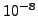
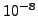

Convergence is checked for the total temperature, mass flow, total pressure
and geometry separately. Convergence is reaches if the change in solution in
the last iteration does not exceed
 of the largest change
in this network calculation or  times the largest absolute value
within the network (cf. checkconvnet.c).
of the largest change
in this network calculation or  times the largest absolute value
within the network (cf. checkconvnet.c).